| Example | Status | SSIM | Comparison | Notes |
|---|---|---|---|---|
| annotated-heatmap | ALLOW | 0.9277 | 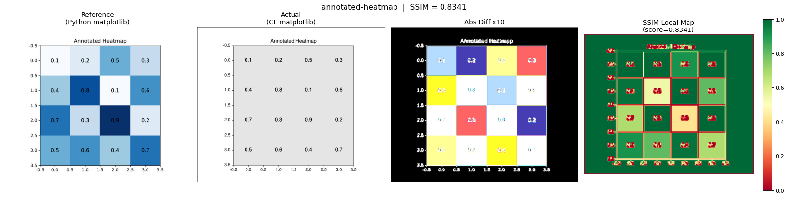 |
ALLOW: Dimension mismatch: CL pixel-based canvas vs Python figsize-based output; resize_to_match() interpolation degrades SSIM (SVG=0.9037/FAIL, PDF=0.9277/FAIL) | Dimension mismatch: (500, 600) vs (695, 834); resized smaller to match larger |
| annotations | ALLOW | 0.8895 | 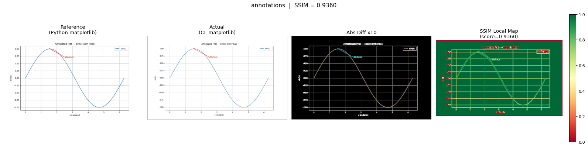 |
ALLOW: Dimension mismatch: CL pixel-based canvas vs Python figsize-based output; resize_to_match() interpolation degrades SSIM (SVG=0.9352/FAIL, PDF=0.8895/FAIL) | Dimension mismatch: (600, 1000) vs (834, 1389); resized smaller to match larger |
| bar-chart | ALLOW | 0.8968 | 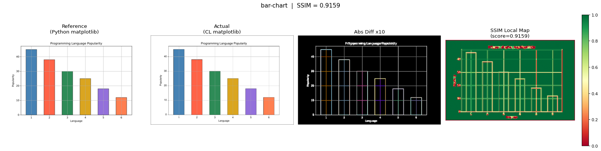 |
ALLOW: Dimension mismatch: CL pixel-based canvas vs Python figsize-based output; resize_to_match() interpolation degrades SSIM (SVG=0.8472/FAIL, PDF=0.8968/FAIL) | Dimension mismatch: (500, 800) vs (695, 1112); resized smaller to match larger |
| bar-colors | ALLOW | 0.9072 | 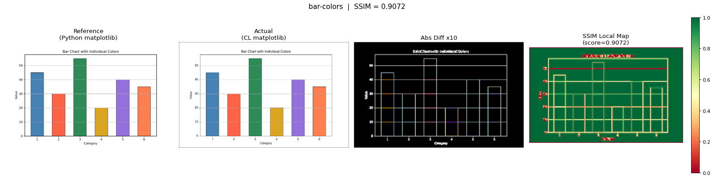 |
ALLOW: Dimension mismatch: CL pixel-based canvas vs Python figsize-based output; resize_to_match() interpolation degrades SSIM (SVG=0.8403/FAIL, PDF=0.9072/FAIL) | Dimension mismatch: (500, 800) vs (695, 1112); resized smaller to match larger |
| bar-labels | ALLOW | 0.9366 | 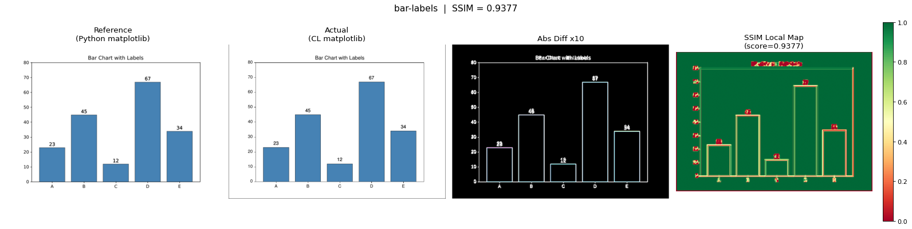 |
ALLOW: Dimension mismatch: CL pixel-based canvas vs Python figsize-based output; resize_to_match() interpolation degrades SSIM (SVG=0.8631/FAIL, PDF=0.9366/FAIL) | Dimension mismatch: (500, 700) vs (695, 973); resized smaller to match larger |
| barh | ALLOW | 0.8951 | 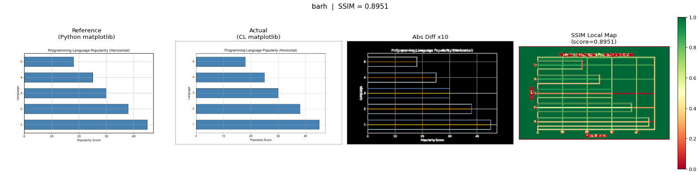 |
ALLOW: Dimension mismatch: CL pixel-based canvas vs Python figsize-based output; resize_to_match() interpolation degrades SSIM (SVG=0.8125/FAIL, PDF=0.8951/FAIL) | Dimension mismatch: (500, 800) vs (695, 1112); resized smaller to match larger |
| boxplot-styles | ALLOW | 0.9175 | ALLOW: Dimension mismatch: CL pixel-based canvas vs Python figsize-based output; resize_to_match() interpolation degrades SSIM (SVG=0.9280/FAIL, PDF=0.9175/FAIL) | Dimension mismatch: (500, 800) vs (695, 1112); resized smaller to match larger | |
| boxplot | ALLOW | 0.9224 | ALLOW: Dimension mismatch: CL pixel-based canvas vs Python figsize-based output; resize_to_match() interpolation degrades SSIM (SVG=0.9240/FAIL, PDF=0.9224/FAIL) | Dimension mismatch: (600, 800) vs (834, 1112); resized smaller to match larger | |
| categorical-bar | ALLOW | 0.9293 | 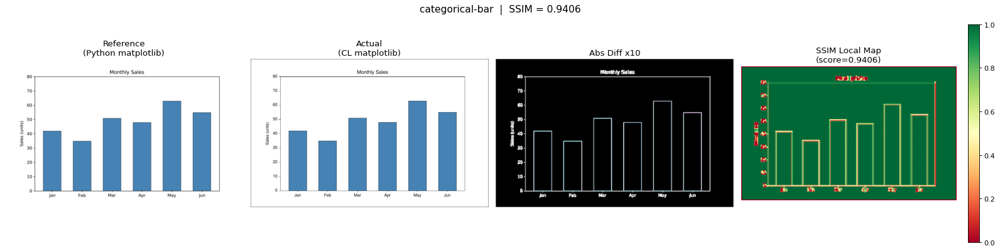 |
ALLOW: Dimension mismatch: CL pixel-based canvas vs Python figsize-based output; resize_to_match() interpolation degrades SSIM (SVG=0.8532/FAIL, PDF=0.9293/FAIL) | Dimension mismatch: (500, 800) vs (695, 1112); resized smaller to match larger |
| color-cycle | ALLOW | 0.8510 | 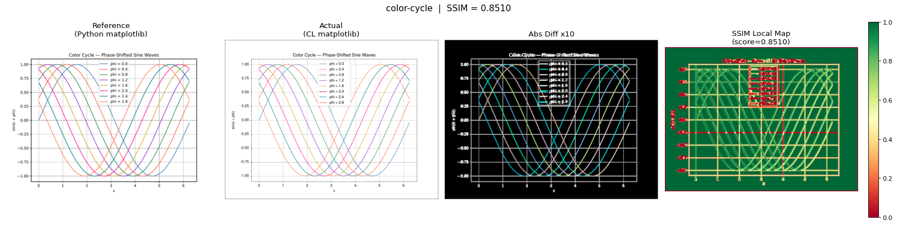 |
ALLOW: Dimension mismatch: CL pixel-based canvas vs Python figsize-based output; resize_to_match() interpolation degrades SSIM (SVG=0.7824/FAIL, PDF=0.8510/FAIL) | Dimension mismatch: (600, 800) vs (834, 1112); resized smaller to match larger |
| colorbar-custom | ALLOW | 0.9206 | 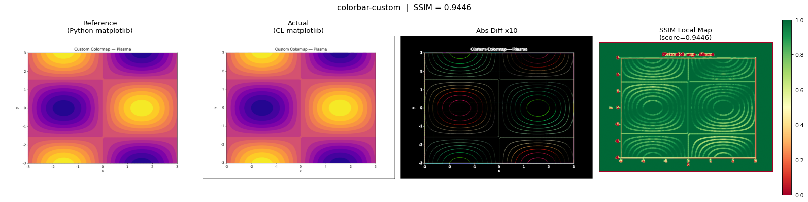 |
ALLOW: Dimension mismatch: CL pixel-based canvas vs Python figsize-based output; resize_to_match() interpolation degrades SSIM (SVG=0.7271/FAIL, PDF=0.9206/FAIL) | Dimension mismatch: (600, 800) vs (834, 1112); resized smaller to match larger |
| contour-demo | ALLOW | 0.9387 | ALLOW: Dimension mismatch: CL pixel-based canvas vs Python figsize-based output; resize_to_match() interpolation degrades SSIM (SVG=0.7290/FAIL, PDF=0.9387/FAIL) | Dimension mismatch: (600, 800) vs (834, 1112); resized smaller to match larger | |
| contour-lines | ALLOW | 0.9227 | ALLOW: Dimension mismatch: CL pixel-based canvas vs Python figsize-based output; resize_to_match() interpolation degrades SSIM (SVG=0.9149/FAIL, PDF=0.9227/FAIL) | Dimension mismatch: (600, 800) vs (834, 1112); resized smaller to match larger | |
| curve-error-band | ALLOW | 0.8735 | 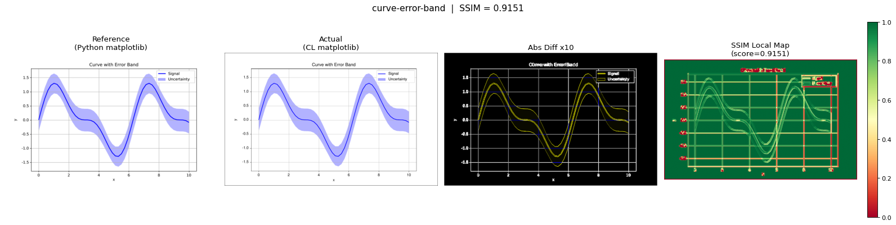 |
ALLOW: SVG fill-opacity compositing differs from Vecto pixel-level alpha blending; dimension mismatch compounds the difference (SVG=0.8414/FAIL, PDF=0.8735/FAIL) | Dimension mismatch: (500, 800) vs (695, 1112); resized smaller to match larger |
| custom-markers | ALLOW | 0.8834 | 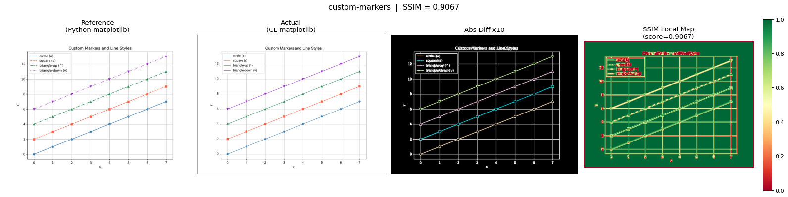 |
ALLOW: Dimension mismatch: CL pixel-based canvas vs Python figsize-based output; resize_to_match() interpolation degrades SSIM (SVG=0.9018/FAIL, PDF=0.8834/FAIL) | Dimension mismatch: (600, 800) vs (834, 1112); resized smaller to match larger |
| custom-ticks | ALLOW | 0.9416 | ALLOW: Dimension mismatch: CL pixel-based canvas vs Python figsize-based output; resize_to_match() interpolation degrades SSIM (SVG=0.9183/FAIL, PDF=0.9416/FAIL) | Dimension mismatch: (500, 800) vs (695, 1112); resized smaller to match larger | |
| errorbar-features | ALLOW | 0.9125 | 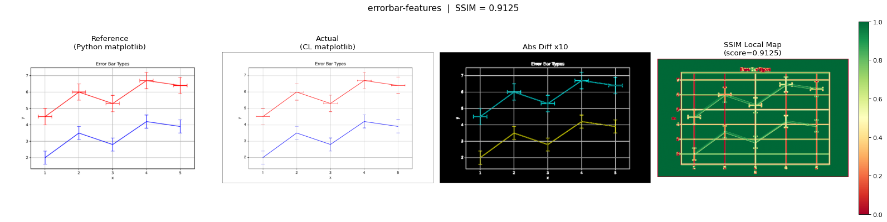 |
ALLOW: Dimension mismatch: CL pixel-based canvas vs Python figsize-based output; resize_to_match() interpolation degrades SSIM (SVG=0.9388/FAIL, PDF=0.9125/FAIL) | Dimension mismatch: (500, 800) vs (695, 1112); resized smaller to match larger |
| errorbar | ALLOW | 0.9018 | 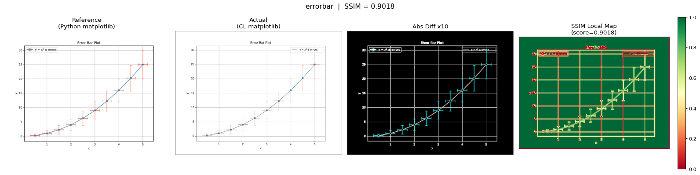 |
ALLOW: Dimension mismatch: CL pixel-based canvas vs Python figsize-based output; resize_to_match() interpolation degrades SSIM (SVG=0.9317/FAIL, PDF=0.9018/FAIL) | Dimension mismatch: (600, 800) vs (834, 1112); resized smaller to match larger |
| figure-labels | ALLOW | 0.9292 | 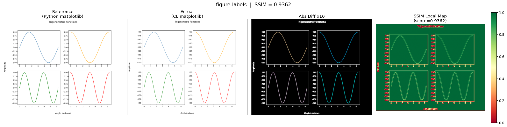 |
ALLOW: Dimension mismatch: CL pixel-based canvas vs Python figsize-based output; resize_to_match() interpolation degrades SSIM (SVG=0.8905/FAIL, PDF=0.9292/FAIL) | Dimension mismatch: (800, 1000) vs (1112, 1389); resized smaller to match larger |
| figure-sizes | ALLOW | 0.8931 | 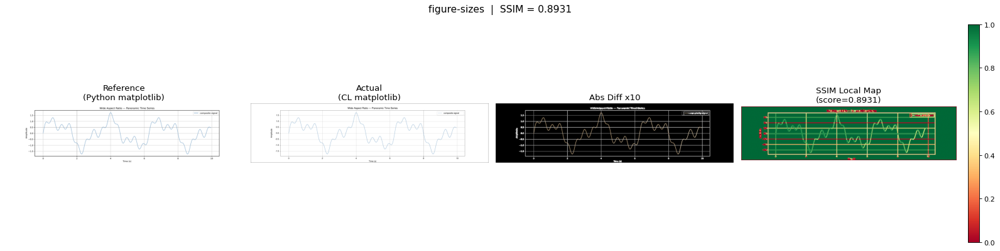 |
ALLOW: Dimension mismatch: CL pixel-based canvas vs Python figsize-based output; resize_to_match() interpolation degrades SSIM (SVG=0.9202/FAIL, PDF=0.8931/FAIL) | Dimension mismatch: (400, 1600) vs (556, 2223); resized smaller to match larger |
| fill-between-alpha | ALLOW | 0.8724 | 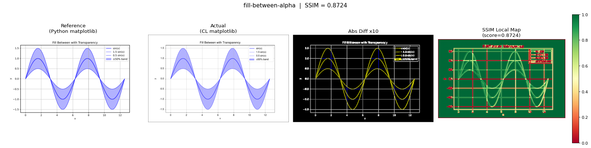 |
ALLOW: SVG fill-opacity compositing differs from Vecto pixel-level alpha blending; dimension mismatch compounds the difference (SVG=0.8390/FAIL, PDF=0.8724/FAIL) | Dimension mismatch: (500, 800) vs (695, 1112); resized smaller to match larger |
| fill-between | ALLOW | 0.8840 | 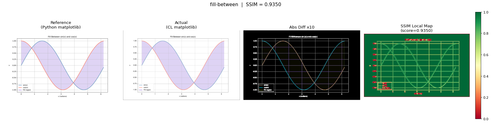 |
ALLOW: SVG fill-opacity compositing differs from Vecto pixel-level alpha blending; dimension mismatch compounds the difference (SVG=0.8869/FAIL, PDF=0.8840/FAIL) | Dimension mismatch: (600, 1000) vs (834, 1389); resized smaller to match larger |
| filled-contour | ALLOW | 0.9478 | 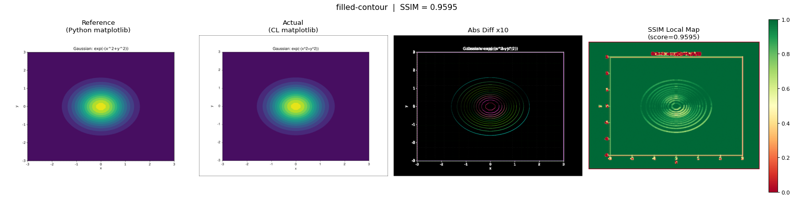 |
ALLOW: Dimension mismatch: CL pixel-based canvas vs Python figsize-based output; resize_to_match() interpolation degrades SSIM (SVG=0.6295/FAIL, PDF=0.9478/FAIL) | Dimension mismatch: (600, 800) vs (834, 1112); resized smaller to match larger |
| gridspec-custom | ALLOW | 0.8913 | 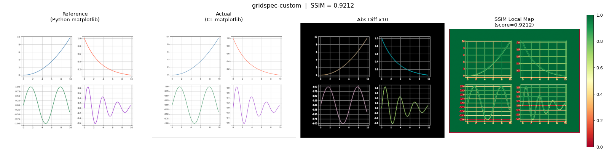 |
ALLOW: Dimension mismatch: CL pixel-based canvas vs Python figsize-based output; resize_to_match() interpolation degrades SSIM (SVG=0.9236/FAIL, PDF=0.8913/FAIL) | Dimension mismatch: (800, 1000) vs (1112, 1389); resized smaller to match larger |
| gridspec-multi | ALLOW | 0.8818 | 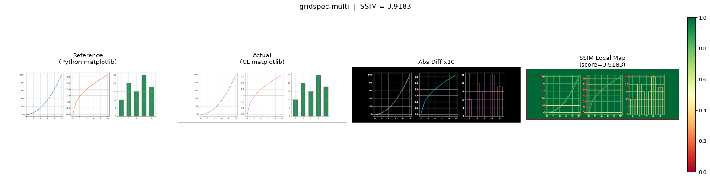 |
ALLOW: Dimension mismatch: CL pixel-based canvas vs Python figsize-based output; resize_to_match() interpolation degrades SSIM (SVG=0.8801/FAIL, PDF=0.8818/FAIL) | Dimension mismatch: (400, 1200) vs (556, 1667); resized smaller to match larger |
| histogram-multi | ALLOW | 0.9094 | 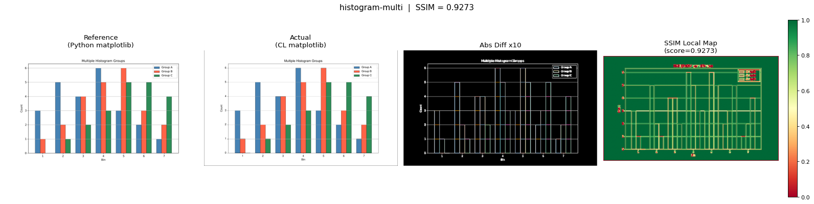 |
ALLOW: Dimension mismatch: CL pixel-based canvas vs Python figsize-based output; resize_to_match() interpolation degrades SSIM (SVG=0.8225/FAIL, PDF=0.9094/FAIL) | Dimension mismatch: (600, 1000) vs (834, 1389); resized smaller to match larger |
| histogram-types | ALLOW | 0.8881 | 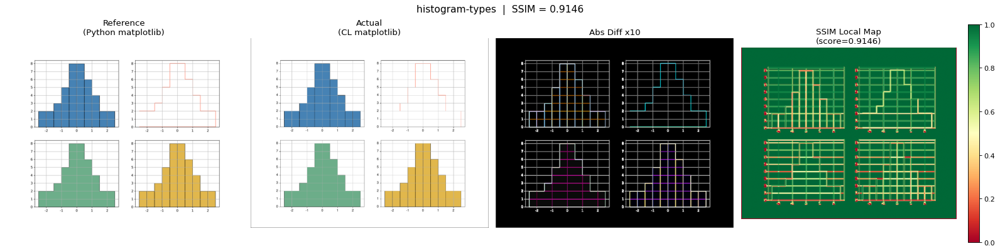 |
ALLOW: Dimension mismatch: CL pixel-based canvas vs Python figsize-based output; resize_to_match() interpolation degrades SSIM (SVG=0.8729/FAIL, PDF=0.8881/FAIL) | Dimension mismatch: (800, 1000) vs (1112, 1389); resized smaller to match larger |
| histogram | ALLOW | 0.8761 | 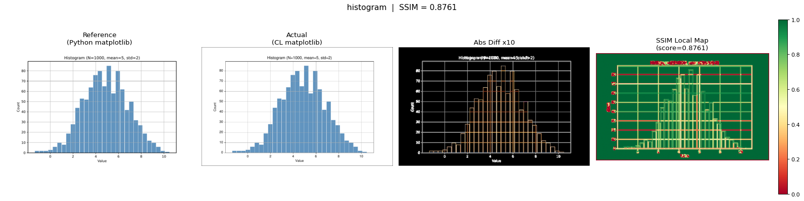 |
ALLOW: Dimension mismatch: CL pixel-based canvas vs Python figsize-based output; resize_to_match() interpolation degrades SSIM (SVG=0.8275/FAIL, PDF=0.8761/FAIL) | Dimension mismatch: (500, 800) vs (695, 1112); resized smaller to match larger |
| hlines-vlines | ALLOW | 0.9308 | 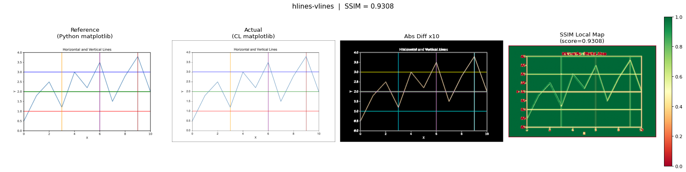 |
ALLOW: Dimension mismatch: CL pixel-based canvas vs Python figsize-based output; resize_to_match() interpolation degrades SSIM (SVG=0.8786/FAIL, PDF=0.9308/FAIL) | Dimension mismatch: (500, 800) vs (695, 1112); resized smaller to match larger |
| horizontal-bar-stacked | ALLOW | 0.8836 | 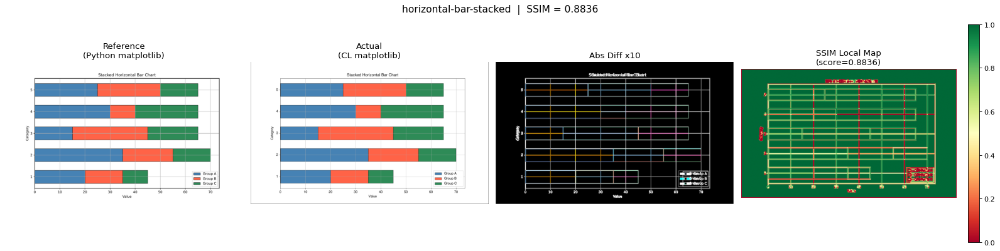 |
ALLOW: Dimension mismatch: CL pixel-based canvas vs Python figsize-based output; resize_to_match() interpolation degrades SSIM (SVG=0.7948/FAIL, PDF=0.8836/FAIL) | Dimension mismatch: (600, 1000) vs (834, 1389); resized smaller to match larger |
| imshow-heatmap | PASS | 0.9630 | 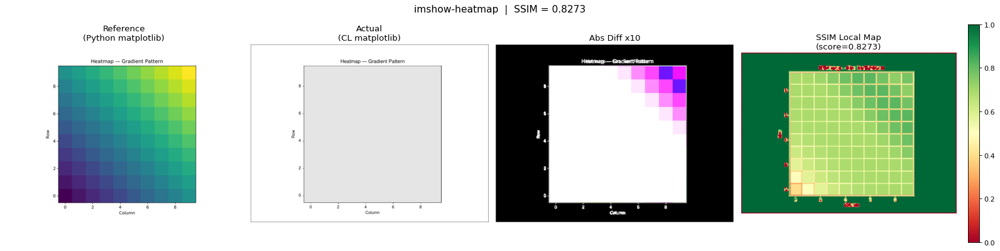 |
Dimension mismatch: (600, 800) vs (834, 1112); resized smaller to match larger |
| inverted-axes | PASS | 0.9526 | 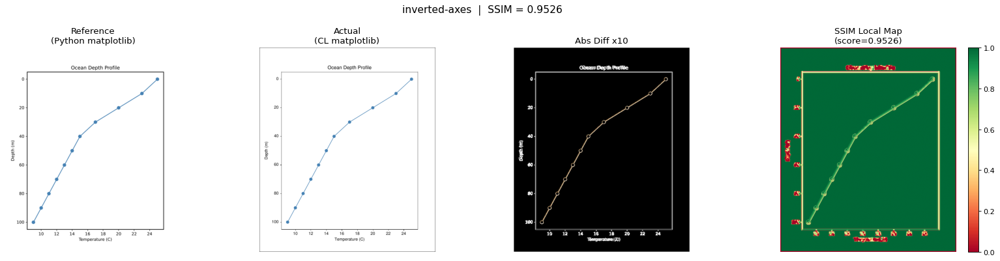 |
Dimension mismatch: (700, 600) vs (973, 834); resized smaller to match larger |
| legend-styles | ALLOW | 0.8913 | 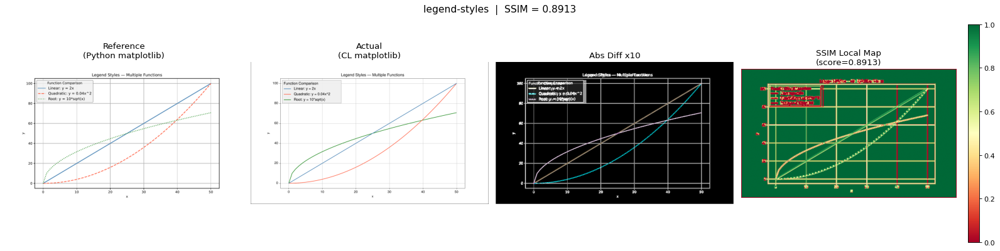 |
ALLOW: Dimension mismatch: CL pixel-based canvas vs Python figsize-based output; resize_to_match() interpolation degrades SSIM (SVG=0.9072/FAIL, PDF=0.8913/FAIL) | Dimension mismatch: (600, 1000) vs (834, 1389); resized smaller to match larger |
| log-scale | ALLOW | 0.9188 | 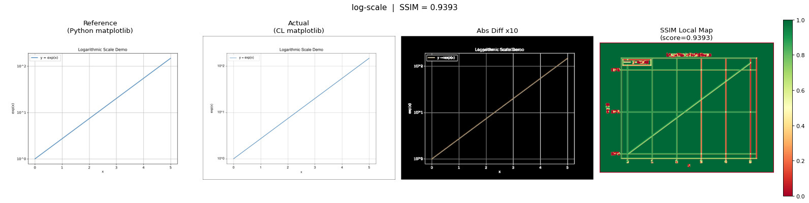 |
ALLOW: Dimension mismatch: CL pixel-based canvas vs Python figsize-based output; resize_to_match() interpolation degrades SSIM (SVG=0.9501/PASS, PDF=0.9188/FAIL) | Dimension mismatch: (600, 800) vs (834, 1112); resized smaller to match larger |
| logit-demo | ALLOW | 0.9143 | 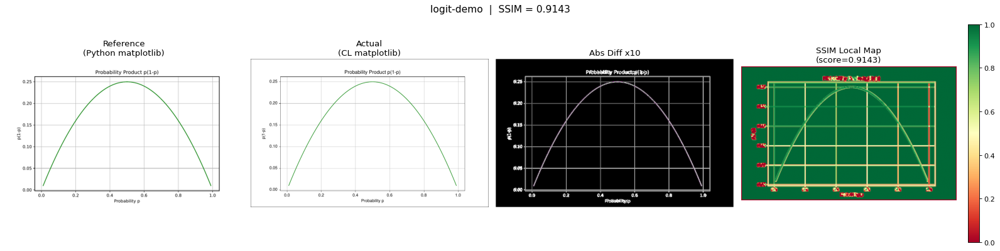 |
ALLOW: Dimension mismatch: CL pixel-based canvas vs Python figsize-based output; resize_to_match() interpolation degrades SSIM (SVG=0.9231/FAIL, PDF=0.9143/FAIL) | Dimension mismatch: (500, 800) vs (695, 1112); resized smaller to match larger |
| multi-line-styles | ALLOW | 0.8537 | 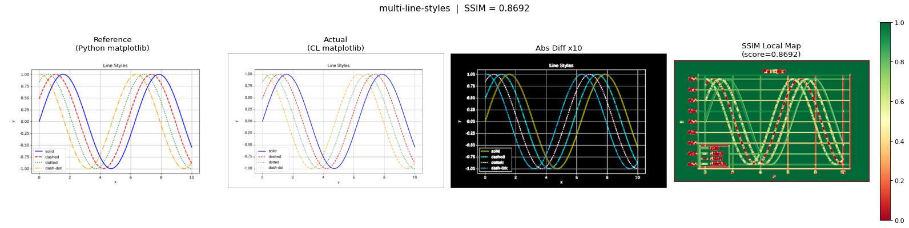 |
ALLOW: Dimension mismatch: CL pixel-based canvas vs Python figsize-based output; resize_to_match() interpolation degrades SSIM (SVG=0.8427/FAIL, PDF=0.8537/FAIL) | Dimension mismatch: (500, 800) vs (695, 1112); resized smaller to match larger |
| multi-line | ALLOW | 0.8654 | 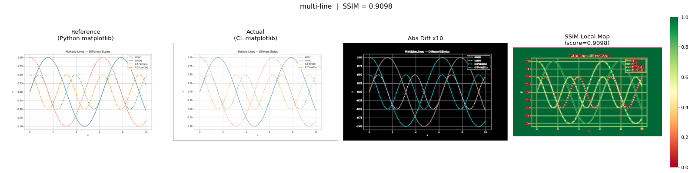 |
ALLOW: Dimension mismatch: CL pixel-based canvas vs Python figsize-based output; resize_to_match() interpolation degrades SSIM (SVG=0.8753/FAIL, PDF=0.8654/FAIL) | Dimension mismatch: (600, 1000) vs (834, 1389); resized smaller to match larger |
| pcolormesh-basic | ALLOW | 0.6960 | 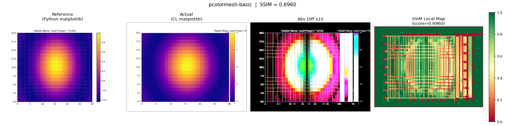 |
ALLOW: Gouraud shading not implemented in CL; uses flat-color quad approximation instead of smooth interpolation (SVG=0.5005/FAIL, PDF=0.6960/FAIL) | Dimension mismatch: (600, 800) vs (834, 1112); resized smaller to match larger |
| pcolormesh | ALLOW | 0.7461 | 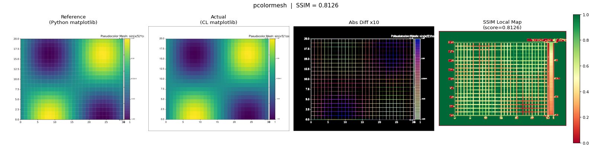 |
ALLOW: Gouraud shading not implemented in CL; uses flat-color quad approximation instead of smooth interpolation (SVG=0.5384/FAIL, PDF=0.7461/FAIL) | Dimension mismatch: (600, 800) vs (834, 1112); resized smaller to match larger |
| pie-chart | PASS | 0.9630 | 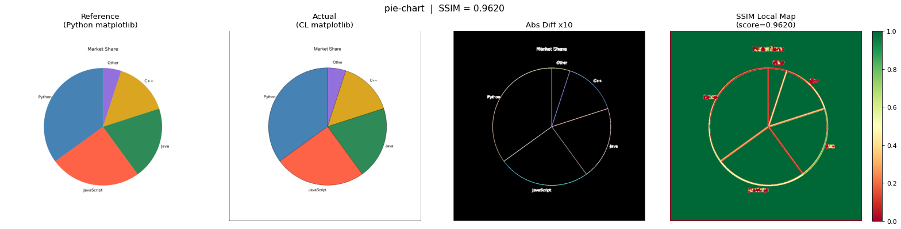 |
Dimension mismatch: (700, 700) vs (973, 973); resized smaller to match larger |
| pie-features | PASS | 0.9572 | 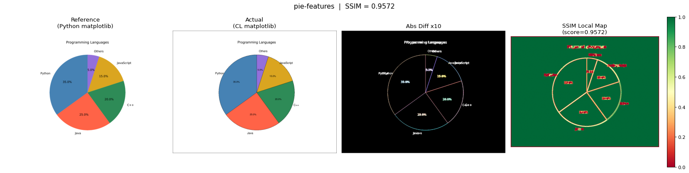 |
Dimension mismatch: (600, 800) vs (834, 1112); resized smaller to match larger |
| polar-line | ALLOW | 0.9473 | ALLOW: Dimension mismatch: CL pixel-based canvas vs Python figsize-based output; resize_to_match() interpolation degrades SSIM (SVG=0.8774/FAIL, PDF=0.9473/FAIL) | Dimension mismatch: (480, 640) vs (667, 889); resized smaller to match larger | |
| polar-multi | PASS | 0.9532 | 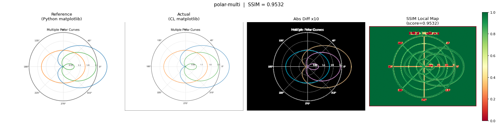 |
Dimension mismatch: (480, 640) vs (667, 889); resized smaller to match larger |
| polar-rose | ALLOW | 0.9395 | ALLOW: Dimension mismatch: CL pixel-based canvas vs Python figsize-based output; resize_to_match() interpolation degrades SSIM (SVG=0.8413/FAIL, PDF=0.9395/FAIL) | Dimension mismatch: (480, 640) vs (667, 889); resized smaller to match larger | |
| polar-scatter | PASS | 0.9516 | 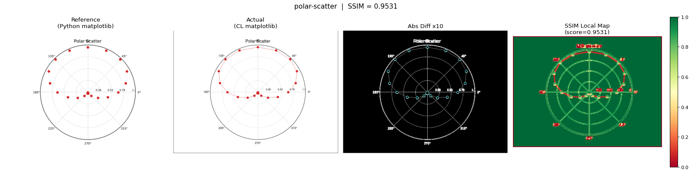 |
Dimension mismatch: (480, 640) vs (667, 889); resized smaller to match larger |
| polar-spiral | ALLOW | 0.9404 | ALLOW: Dimension mismatch: CL pixel-based canvas vs Python figsize-based output; resize_to_match() interpolation degrades SSIM (SVG=0.8563/FAIL, PDF=0.9404/FAIL) | Dimension mismatch: (480, 640) vs (667, 889); resized smaller to match larger | |
| polar-styled | PASS | 0.9545 | 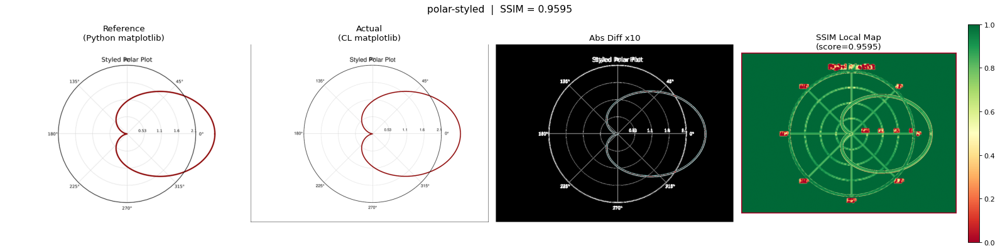 |
Dimension mismatch: (480, 640) vs (667, 889); resized smaller to match larger |
| quiver-basic | ALLOW | 0.8943 | 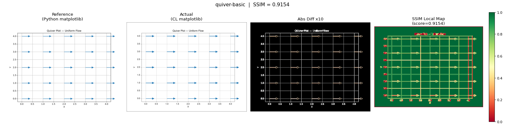 |
ALLOW: Dimension mismatch: CL pixel-based canvas vs Python figsize-based output; resize_to_match() interpolation degrades SSIM (SVG=0.9249/FAIL, PDF=0.8943/FAIL) | Dimension mismatch: (600, 800) vs (834, 1112); resized smaller to match larger |
| quiver-colored | ALLOW | 0.9134 | 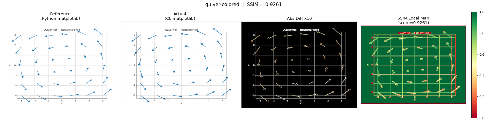 |
ALLOW: Dimension mismatch: CL pixel-based canvas vs Python figsize-based output; resize_to_match() interpolation degrades SSIM (SVG=0.9224/FAIL, PDF=0.9134/FAIL) | Dimension mismatch: (600, 800) vs (834, 1112); resized smaller to match larger |
| quiver-gradient | ALLOW | 0.9075 | ALLOW: Dimension mismatch: CL pixel-based canvas vs Python figsize-based output; resize_to_match() interpolation degrades SSIM (SVG=0.9372/FAIL, PDF=0.9075/FAIL) | Dimension mismatch: (600, 800) vs (834, 1112); resized smaller to match larger | |
| quiver-scaled | ALLOW | 0.8958 | ALLOW: Dimension mismatch: CL pixel-based canvas vs Python figsize-based output; resize_to_match() interpolation degrades SSIM (SVG=0.9068/FAIL, PDF=0.8958/FAIL) | Dimension mismatch: (600, 800) vs (834, 1112); resized smaller to match larger | |
| reference-grid | ALLOW | 0.9451 | 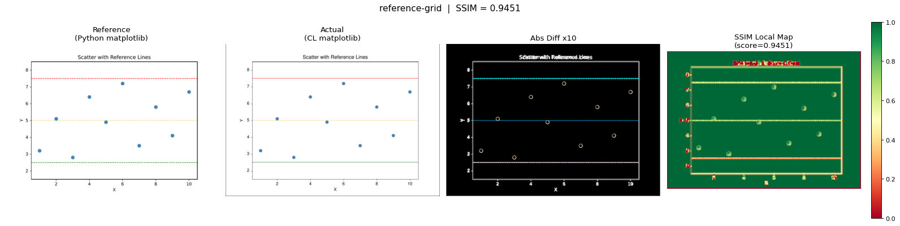 |
ALLOW: Dimension mismatch: CL pixel-based canvas vs Python figsize-based output; resize_to_match() interpolation degrades SSIM (SVG=0.9254/FAIL, PDF=0.9451/FAIL) | Dimension mismatch: (500, 700) vs (695, 973); resized smaller to match larger |
| scales-overview | ALLOW | 0.8834 | 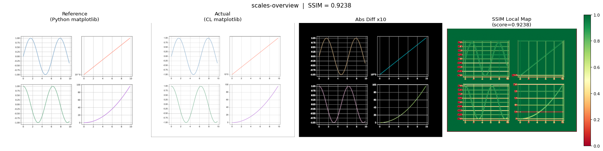 |
ALLOW: Dimension mismatch: CL pixel-based canvas vs Python figsize-based output; resize_to_match() interpolation degrades SSIM (SVG=0.9146/FAIL, PDF=0.8834/FAIL) | Dimension mismatch: (800, 1000) vs (1112, 1389); resized smaller to match larger |
| scatter-legend | ALLOW | 0.9177 | 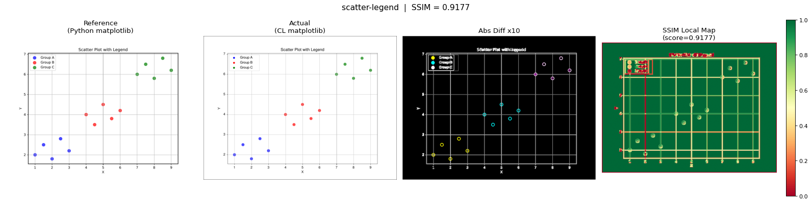 |
ALLOW: Dimension mismatch: CL pixel-based canvas vs Python figsize-based output; resize_to_match() interpolation degrades SSIM (SVG=0.9468/FAIL, PDF=0.9177/FAIL) | Dimension mismatch: (600, 800) vs (834, 1112); resized smaller to match larger |
| scatter-sizes | PASS | 0.9584 | Dimension mismatch: (600, 800) vs (834, 1112); resized smaller to match larger | |
| scatter | ALLOW | 0.9011 | ALLOW: Dimension mismatch: CL pixel-based canvas vs Python figsize-based output; resize_to_match() interpolation degrades SSIM (SVG=0.9125/FAIL, PDF=0.9011/FAIL) | Dimension mismatch: (600, 800) vs (834, 1112); resized smaller to match larger | |
| shared-axes | ALLOW | 0.8834 | 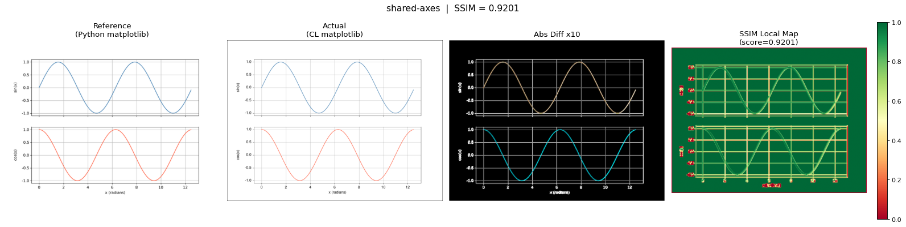 |
ALLOW: Dimension mismatch: CL pixel-based canvas vs Python figsize-based output; resize_to_match() interpolation degrades SSIM (SVG=0.9245/FAIL, PDF=0.8834/FAIL) | Dimension mismatch: (600, 800) vs (834, 1112); resized smaller to match larger |
| simple-line | ALLOW | 0.9001 | 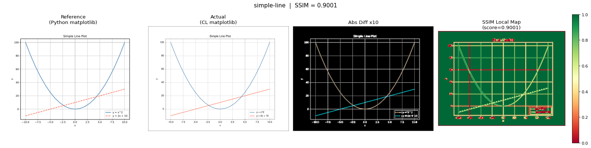 |
ALLOW: Dimension mismatch: CL pixel-based canvas vs Python figsize-based output; resize_to_match() interpolation degrades SSIM (SVG=0.9233/FAIL, PDF=0.9001/FAIL) | Dimension mismatch: (600, 800) vs (834, 1112); resized smaller to match larger |
| span-regions | ALLOW | 0.9410 | 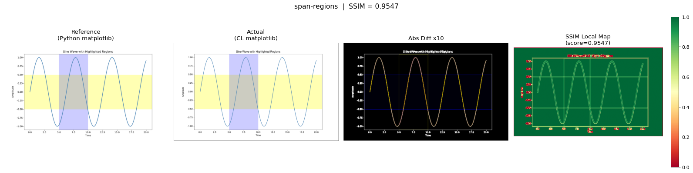 |
ALLOW: SVG fill-opacity compositing differs from Vecto pixel-level alpha blending; dimension mismatch compounds the difference (SVG=0.7445/FAIL, PDF=0.9410/FAIL) | Dimension mismatch: (600, 1000) vs (834, 1389); resized smaller to match larger |
| stacked-bar | ALLOW | 0.9032 | 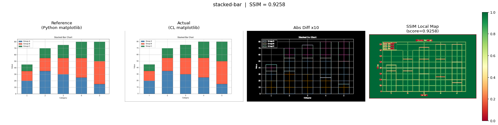 |
ALLOW: Dimension mismatch: CL pixel-based canvas vs Python figsize-based output; resize_to_match() interpolation degrades SSIM (SVG=0.8207/FAIL, PDF=0.9032/FAIL) | Dimension mismatch: (600, 1000) vs (834, 1389); resized smaller to match larger |
| stackplot | ALLOW | 0.9072 | 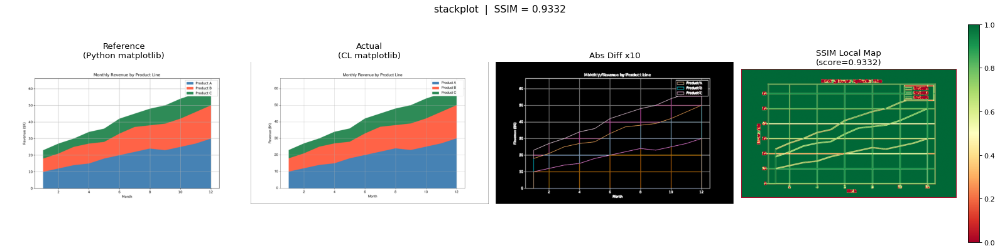 |
ALLOW: Dimension mismatch: CL pixel-based canvas vs Python figsize-based output; resize_to_match() interpolation degrades SSIM (SVG=0.8319/FAIL, PDF=0.9072/FAIL) | Dimension mismatch: (600, 1000) vs (834, 1389); resized smaller to match larger |
| stem-plot | ALLOW | 0.8666 | 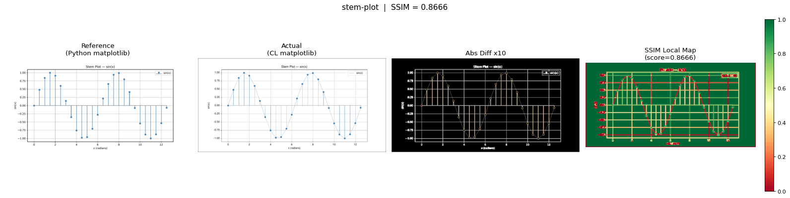 |
ALLOW: Dimension mismatch: CL pixel-based canvas vs Python figsize-based output; resize_to_match() interpolation degrades SSIM (SVG=0.8809/FAIL, PDF=0.8666/FAIL) | Dimension mismatch: (500, 1000) vs (695, 1389); resized smaller to match larger |
| stem-simple | ALLOW | 0.8920 | ALLOW: Dimension mismatch: CL pixel-based canvas vs Python figsize-based output; resize_to_match() interpolation degrades SSIM (SVG=0.9036/FAIL, PDF=0.8920/FAIL) | Dimension mismatch: (500, 800) vs (695, 1112); resized smaller to match larger | |
| step-plot | ALLOW | 0.8929 | ALLOW: Dimension mismatch: CL pixel-based canvas vs Python figsize-based output; resize_to_match() interpolation degrades SSIM (SVG=0.8914/FAIL, PDF=0.8929/FAIL) | Dimension mismatch: (500, 1000) vs (695, 1389); resized smaller to match larger | |
| streamplot-basic | PASS | 0.9564 | Dimension mismatch: (600, 800) vs (834, 1112); resized smaller to match larger | |
| streamplot-styled | PASS | 0.9539 | Dimension mismatch: (600, 800) vs (834, 1112); resized smaller to match larger | |
| subplots-shared | PASS | 0.9519 | Dimension mismatch: (800, 1000) vs (1112, 1389); resized smaller to match larger | |
| subplots | ALLOW | 0.8796 | ALLOW: Dimension mismatch: CL pixel-based canvas vs Python figsize-based output; resize_to_match() interpolation degrades SSIM (SVG=0.8985/FAIL, PDF=0.8796/FAIL) | Dimension mismatch: (800, 1000) vs (1112, 1389); resized smaller to match larger | |
| symlog-demo | ALLOW | 0.8919 | ALLOW: Dimension mismatch: CL pixel-based canvas vs Python figsize-based output; resize_to_match() interpolation degrades SSIM (SVG=0.9347/FAIL, PDF=0.8919/FAIL) | Dimension mismatch: (500, 800) vs (695, 1112); resized smaller to match larger | |
| text-alignment | PASS | 0.9551 | Dimension mismatch: (500, 700) vs (695, 973); resized smaller to match larger | |
| text-positions | PASS | 0.9567 | Dimension mismatch: (500, 700) vs (695, 973); resized smaller to match larger | |
| text-watermark | ALLOW | 0.9499 | ALLOW: Dimension mismatch: CL pixel-based canvas vs Python figsize-based output; resize_to_match() interpolation degrades SSIM (SVG=0.9137/FAIL, PDF=0.9499/FAIL) | Dimension mismatch: (500, 700) vs (695, 973); resized smaller to match larger | |
| threshold-lines | ALLOW | 0.9149 | ALLOW: Dimension mismatch: CL pixel-based canvas vs Python figsize-based output; resize_to_match() interpolation degrades SSIM (SVG=0.8722/FAIL, PDF=0.9149/FAIL) | Dimension mismatch: (500, 800) vs (695, 1112); resized smaller to match larger | |
| twin-axes | ALLOW | 0.8575 | ALLOW: Dimension mismatch: CL pixel-based canvas vs Python figsize-based output; resize_to_match() interpolation degrades SSIM (SVG=0.8492/FAIL, PDF=0.8575/FAIL) | Dimension mismatch: (500, 1200) vs (695, 1667); resized smaller to match larger | |
| twin-y-axis | ALLOW | 0.9295 | ALLOW: Dimension mismatch: CL pixel-based canvas vs Python figsize-based output; resize_to_match() interpolation degrades SSIM (SVG=0.8939/FAIL, PDF=0.9295/FAIL) | Dimension mismatch: (500, 800) vs (695, 1112); resized smaller to match larger | |
| two-scales | ALLOW | 0.9318 | ALLOW: Dimension mismatch: CL pixel-based canvas vs Python figsize-based output; resize_to_match() interpolation degrades SSIM (SVG=0.9000/FAIL, PDF=0.9318/FAIL) | Dimension mismatch: (500, 800) vs (695, 1112); resized smaller to match larger | |
| violin-basic | ALLOW | 0.9065 | ALLOW: Dimension mismatch: CL pixel-based canvas vs Python figsize-based output; resize_to_match() interpolation degrades SSIM (SVG=0.8620/FAIL, PDF=0.9065/FAIL) | Dimension mismatch: (600, 800) vs (834, 1112); resized smaller to match larger | |
| violin-comparison | ALLOW | 0.9245 | ALLOW: Dimension mismatch: CL pixel-based canvas vs Python figsize-based output; resize_to_match() interpolation degrades SSIM (SVG=0.8916/FAIL, PDF=0.9245/FAIL) | Dimension mismatch: (600, 800) vs (834, 1112); resized smaller to match larger | |
| violin-styled | ALLOW | 0.9183 | ALLOW: Dimension mismatch: CL pixel-based canvas vs Python figsize-based output; resize_to_match() interpolation degrades SSIM (SVG=0.8385/FAIL, PDF=0.9183/FAIL) | Dimension mismatch: (600, 800) vs (834, 1112); resized smaller to match larger |